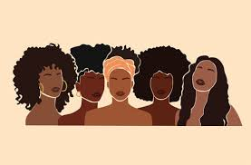
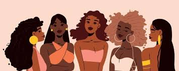

Celebrating Black Queer Women: Amplifying Voices and Legacies in LGTBQ+ history
Amplified voices and stories of just a few Black queer women who have made indelible marks on LGTBQ+ history.
Intersectionality is the crossroads of where different social identities meet. For this particular website I want to highlight Black, Queer, Women who have felt alone in their identity and want community. This website will be a connection hub for people with these social identities to meet each other and connect.
Our goal is to bring people together to form community. We want to bring Black Queer Women together so we have events planned to do so.
For our kickoff event we want to have a paint and sip get together.
Another event we have is our first book club meeting that will be reoccuring depending on members availability
To understand someone’s experience, we must also understand structures and systems.
Amplified voices and stories of just a few Black queer women who have made indelible marks on LGTBQ+ history.
Black & LGBTQ+: Approaching Intersectional Conversations